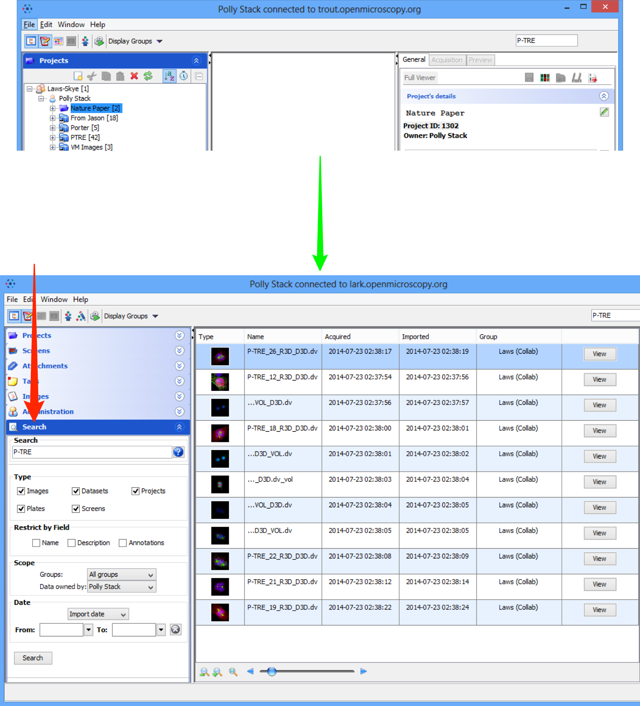
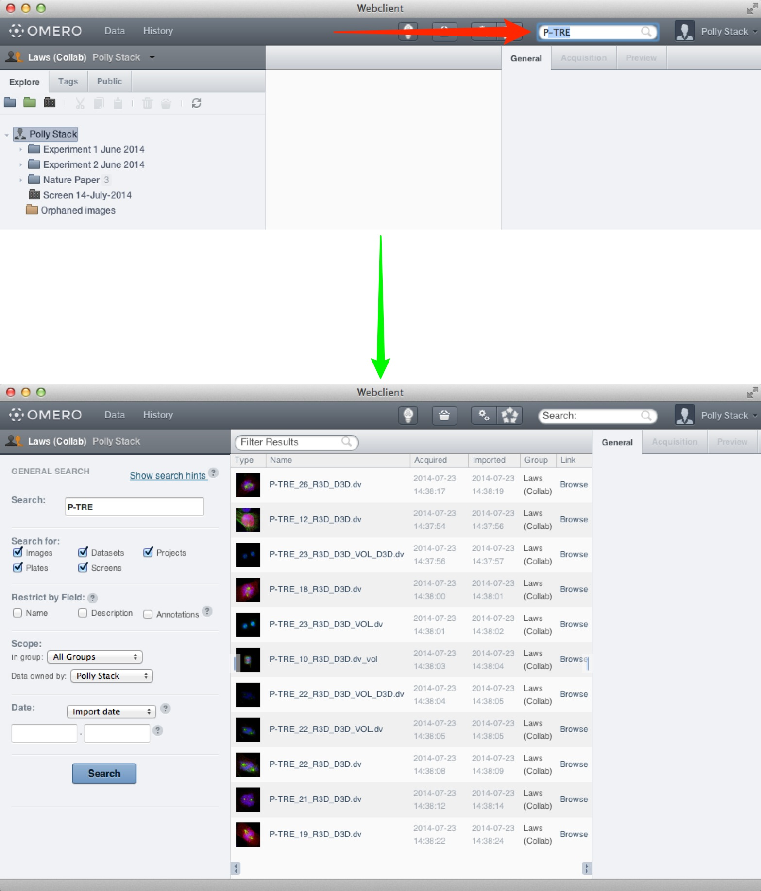
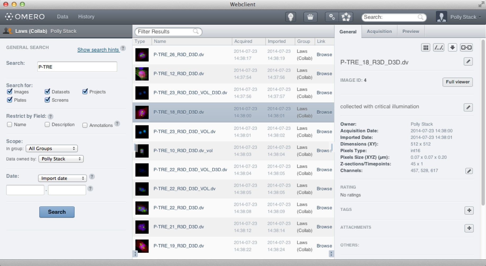
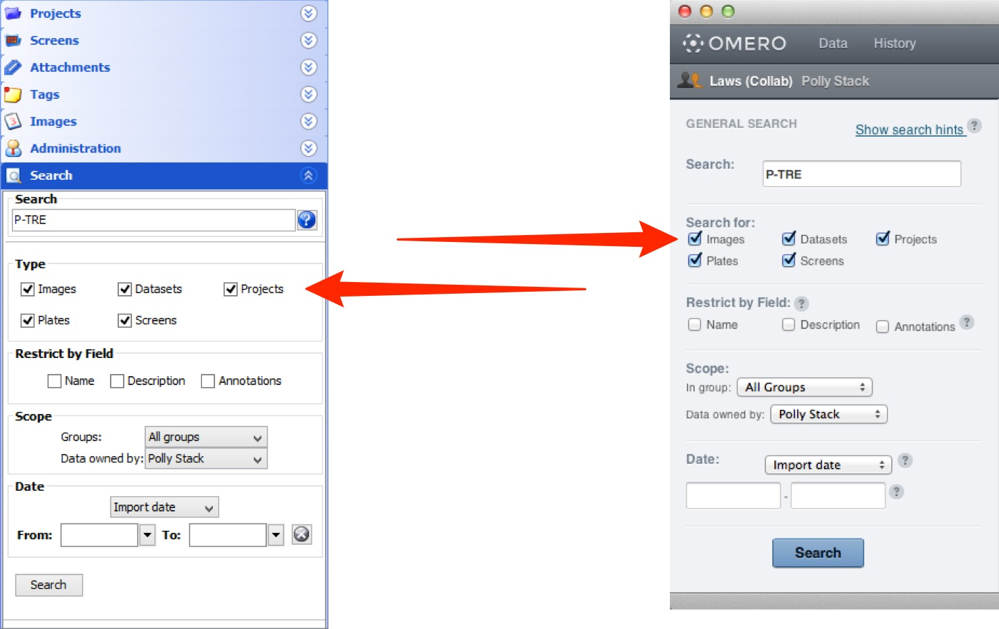
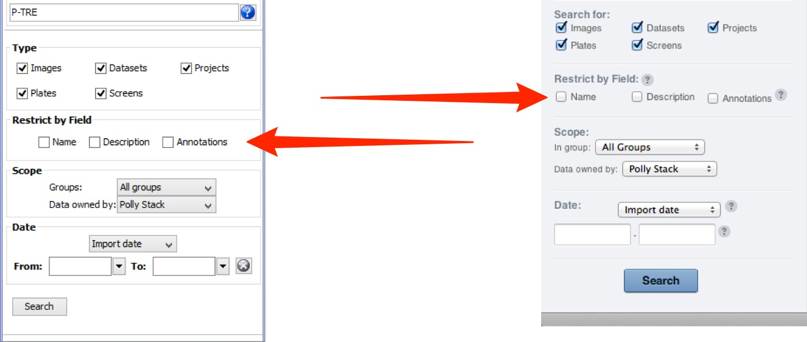
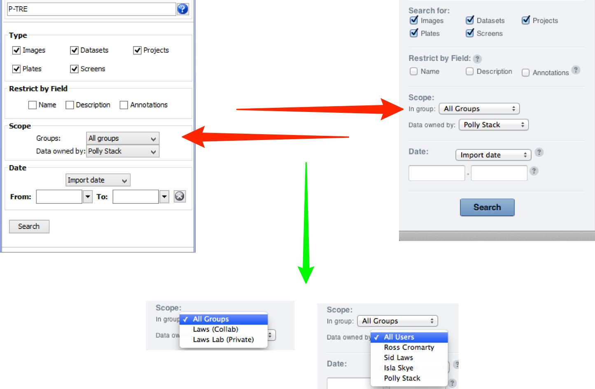
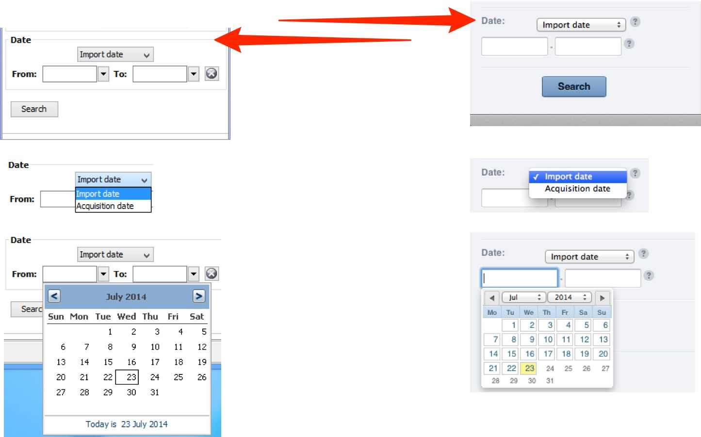

Introduction
OMERO has a text-based search feature which allows you to search for data by name or other text associated with the data.
Other fields which will be searched for include Description or annotations on the data such as Tags, Key-Value pairs, Comments and text-based file Attachments.
Details on keyword searching are discussed after the walk-through steps below.
The search functionality is identical in both the OMERO.insight and OMERO.web clients. The following steps can be applied to either client.
-
Start a search by typing text into the search box at the top right of the window.
Hit Enter to search.
You will be taken to the main search page and the results will be displayed.
You can also go directly to the main search in OMERO.insight by opening the Search pane at the left.
OMERO.insight

OMERO.web

-
Enter text in the form of one or more keywords, or an OMERO ID, for any object, Image, Dataset, Project, Screen or Plate, to return that object.
Ensure the appropriate Type checkbox is selected.
There are further details on how keywords are handled below.
A search using the OMERO ID will always return any image(s) with the appropriate IDs, irrespective of other search settings set e.g. restriction to group or user.
Multiple IDs can be entered, separated by commas, to return more than one image or object.
-
Select items from your search results in the table to browse.
Selected objects will be shown in the right panel.


Tips:
Use wildcards to broaden your search.
An asterisk * acts as a multi-character wildcard, at the beginning or end of a word or even in the middle.
e.g. *phase will match metaphase, anaphase, telophase etc.
mito* will match mitosis and mitochondria
m*e will match metaphase and mutate
A question mark ? acts as a single-character wildcard.
e.g. Aurora? will match AuroraA or AuroraB.
Use the AND keyword to ensure that all results contain all keywords.
e.g. GFP AND H2B will only return results that contain both GFP and H2B.
Simply searching for GFP H2B will return results that contain GFP or H2B, although items that contain both will be ranked higher in the search results.
-
Use the Type checkboxes to limit your search to specific types of data or objects.

-
To limit your search to the Name, Description or Annotations attached to your data, select the relevant Restrict by Field box(es).
Annotations include Tags, Key-Value pairs, Comments and the name and contents of attached files.

Note
By default, OMERO will search on all fields that are indexed by the search engine.
You can see the full list on the OMERO Developers Documentation Search page.
-
Select the group that you want to search in and the owner of the data from the drop-down menus.
It is also possible to search across all groups or search for data belonging to all users.

-
Choose Import date or Acquisition date from the drop-down menu.
Enter or choose a date range to find data imported or acquired within a specified period.
If only a start date is entered, the end date will be the current date.
In OMERO.insight, entering a date without specifying any keyword in the search box will return all the data imported within the specified date range.

Keyword Searching
When OMERO adds data to its search index, it processes the text and looks for keywords or “tokens” to index.
In general it does this by splitting text by any character that is not a letter or number. For example, an image name such as AuroraB-siRNAi_control_01.tiff will be split into 5 tokens:
AuroraB, siRNAi, control, 01, tiff.
This image will be returned by a search for any of those tokens, but will be ranked higher in the search results if multiple tokens are matched.
For example, searching for:
siRNAi AuroraB
will find any images that have tokens of:
siRNAi OR AuroraB
but images that contain both these keywords will be returned ahead of other results.
Searching for:
siRNAi AND AuroraB
will only match images that have both tokens.
Search queries themselves are split into tokens as part of the search. Therefore, you expect to find an image named AuroraB-siRNAi_control_01.tiff with any of the following searches:
- AuroraB_siRNAi
- AuroraB-siRNAi
- AuroraB siRNAi
- siRNAi AuroraB
Order is ignored for separate keywords.
Note
Due to this tokenisation searching for:
si
will not return siRNAi unless a wildcard is added - si*.
Key-Value Pair Annotation Search
Key-Value pairs are included in the annotations indexed and searched by OMERO.
Use the syntax: Key:value to find Key-Value pairs specifically (not other annotations).
For example, searching for:
Temperature:37.5
will find all Projects, Datasets or Images with a Key-Value pair annotation where the key is: Temperature and the corresponding value is: 37.5.
Searching for:
has_key:Temperature
will return objects with a Key-Value pair annotation with the specific key: Temperature.
Advanced Search
To understand the basics of Search in OMERO, or to search for Key-Value pairs, please also read the Tips (wildcards), Keyword searching and Key-Value Pair Annotation Search chapters. There is no difference in searching for Key-Value pairs between the basic and the Advanced search tabs.
Advanced search is available in OMERO.web only.
Inside the search page, click on the Advanced tab in the left-hand pane.
OMERO.server uses Lucene to perform the search commands. The Advanced tab accepts the Lucene queries directly, with no parsing. Follow the steps below to get started with Lucene queries.
Construct searches for a token in any Field as listed in the table of fields using the syntax: Field:token.
| Field |
Comment |
| name |
name of the field |
| details.owner.omeName |
login name of the owner |
| details.owner.firstName |
first name of the owner |
| details.owner.lastName |
last name of the owner |
| details.group.name |
group name of the group |
| tag |
a Tag attached to the object |
| annotation |
Tag, Key-Value Pairs, Comment, but not Attachment |
| annotation.ns |
a namespace of an annotation (Tag, Key-Value Pairs, Comment and Attachment) |
| annotation.type |
type of an annotation, in the syntax TagAnnotation for Tags, MapAnnotation for Key-Value Pairs, CommentAnnotation for Comment, FileAnnotation for Attachment and LongAnnotation for Ratings |
| file.name |
name of original file attached to an object |
| file.format |
format of original file attached to an object |
| file.path |
path of original file attached to an object |
| file.contents |
contents of original file attached to an object. Presently, the "pdf" and "csv" formats only are searched for contents |
For example, searching for:
name:injected
will find all Projects, Datasets, Screens, Plates, Wells or Images which have the token injected in their name.
and searching for:
file.format:pdf
will find all Projects, Datasets, Screens, Plates, Wells or Images with a FileAnnotation where the format of the FileAnnotation is pdf.
Combine searching in fields using AND, OR, NOT.
For example, searching for:
file.contents:figure AND file.format:pdf
will find all Projects, Datasets, Screens, Plates, Wells or Images with a FileAnnotation which has the token figure in it and with a FileAnnotation where the format of the FileAnnotation is pdf. Note that the two FileAnnotations may or may not be identical, both cases will be listed in the search results.
Combine searching in fields using AND, OR, NOT and brackets.
For example, searching for:
name:injected AND staining:HE AND tag:granulocyte AND NOT (tag:eosinophil OR tag:neutrophil)
will find all Projects, Datasets, Screens, Plates, Wells or Images with a name containing injected, annotated with a Key-Value pair annotation with the specific key: staining and the corresponding value: HE which are also tagged with the tag granulocyte but neither of the tags eosinophil and neutrophil.
All Tutorial Material is available on line at: help.openmicroscopy.org
The Main OME website is at: www.openmicroscopy.org